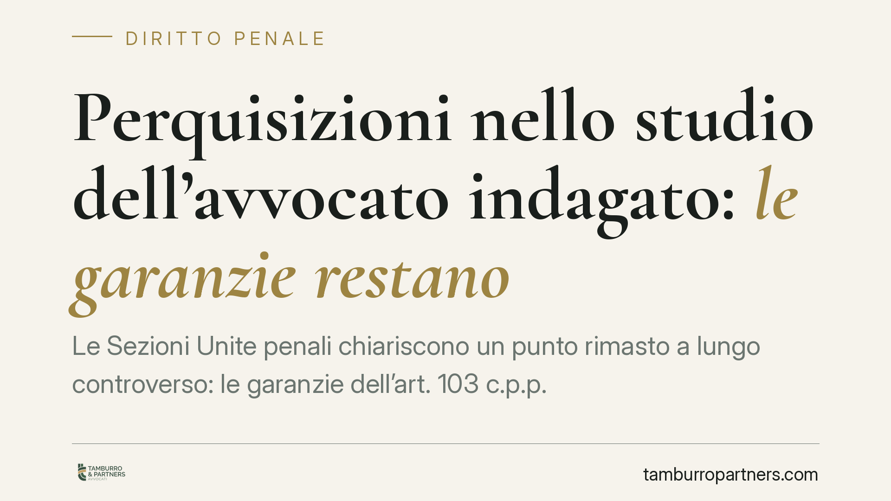

Perquisizioni nello studio dell'avvocato indagato: le garanzie restano
Le Sezioni Unite penali chiariscono un punto rimasto a lungo controverso: le garanzie dell'art. 103 c.p.p. per ispezioni, perquisizioni e sequestri negli studi legali operano anche quando è l'avvocato stesso a essere indagato. Non si tratta di un privilegio del professionista, ma della protezione del segreto professionale e del diritto di difesa dei suoi assistiti.

Il caso e la decisione
La questione era se le tutele previste dall'art. 103 del codice di procedura penale — pensate per proteggere il rapporto tra difensore e assistito — continuino a valere quando l'avvocato non è terzo, ma è lui stesso destinatario delle indagini.
Le Sezioni Unite penali hanno risposto in senso affermativo [SU n. ___/____ — *estremi da verificare e inserire prima della pubblicazione*]. Il ragionamento è lineare: le garanzie dell'art. 103 non sono un beneficio personale dell'avvocato, ma uno strumento a presidio di beni che appartengono ad altri, cioè i clienti. La qualità di indagato del professionista non trasforma quei beni in materiale liberamente aggredibile.
Cosa prevede l'art. 103 c.p.p.
È utile distinguere i singoli commi, perché ciascuno assolve una funzione diversa.
- Comma 3: presso lo studio del difensore ispezioni, perquisizioni e sequestri possono essere disposti solo per determinate finalità, quando il difensore o altre persone che svolgono stabilmente attività nello studio sono imputati, o al fine di rilevare tracce o altri effetti materiali del reato ovvero di ricercare cose o persone specificamente predeterminate.
- Comma 4: l'atto deve essere compiuto, di regola, dal giudice personalmente o, nel corso delle indagini preliminari, dal pubblico ministero in forza di decreto motivato. Al Consiglio dell'Ordine forense competente è dato avviso della data e del luogo, affinché il presidente o un suo delegato possa assistere.
- Comma 5: pone limiti stringenti alle intercettazioni relative a conversazioni o comunicazioni dei difensori nell'esercizio delle loro funzioni.
- Comma 7: sancisce l'inutilizzabilità dei risultati delle ispezioni, perquisizioni, sequestri e intercettazioni eseguiti *in violazione delle disposizioni precedenti*.
È il comma 7, dunque, la norma di chiusura: l'inutilizzabilità non è un automatismo che scatta a ogni irregolarità formale, ma la conseguenza della violazione delle prescrizioni sostanziali dettate dai commi precedenti. Non ogni difetto genera lo stesso effetto, e occorre valutare quale disposizione sia stata concretamente violata.
La ratio: una tutela che appartiene ai clienti
Qui sta il punto centrale. Il segreto professionale e il diritto di difesa (art. 24 Cost.) non sono nella disponibilità dell'avvocato: gli sono affidati dai clienti. Se le garanzie cadessero per il solo fatto che il difensore è indagato, a essere esposti sarebbero i fascicoli e le confidenze di soggetti del tutto estranei a quell'indagine.
La protezione, insomma, non guarda alla posizione processuale del professionista, ma alla natura del materiale custodito. È una tutela oggettiva, non personale.
Nullità e inutilizzabilità: due regimi da non confondere
È importante non sovrapporre le categorie. L'inutilizzabilità (comma 7) colpisce i *risultati* dell'atto: la prova acquisita in violazione dei commi precedenti non può essere valutata dal giudice. La nullità attiene invece all'atto processuale in quanto tale e segue le regole generali del codice (artt. 177 ss. c.p.p.), con effetti e sanabilità propri.
In concreto, l'omissione dell'avviso al Consiglio dell'Ordine o il compimento dell'atto da parte di soggetto non legittimato incidono sulla validità del compimento dell'atto; l'inutilizzabilità dei risultati discende dal comma 7 nella misura in cui la condotta integra una violazione delle disposizioni precedenti. I due profili vanno tenuti distinti e argomentati separatamente in sede difensiva.
Implicazioni pratiche
Per gli avvocati. La condizione di indagato non priva lo studio delle garanzie procedurali. Ma la tutela va fatta valere tempestivamente, documentando ogni scostamento dal procedimento previsto.
Per i clienti. I documenti e le comunicazioni depositati presso il difensore restano protetti anche se il professionista è coinvolto in un procedimento a suo carico.
Per gli inquirenti. L'accesso allo studio impone il rispetto integrale della sequenza: presupposti del comma 3, intervento del magistrato competente, avviso all'Ordine. La scorciatoia procedurale rischia di vanificare l'acquisizione probatoria.
Cosa fare in concreto
- Verificate la legittimazione: accertate che l'atto sia compiuto personalmente dal magistrato competente ai sensi del comma 4.
- Controllate l'avviso all'Ordine: pretendete che risulti a verbale la data, il luogo e l'avvenuta comunicazione al Consiglio.
- Documentate ogni irregolarità: fate verbalizzare eccezioni e circostanze rilevanti sul momento, senza rinviarle.
- Distinguete i profili di invalidità: qualificate separatamente eventuali nullità dell'atto e inutilizzabilità dei risultati ex comma 7.
- Isolate il materiale dei terzi: segnalate i fascicoli riferiti a clienti estranei all'indagine per circoscrivere l'apprensione.
Un principio, non un'immunità
La decisione non crea zone franche. Lo studio dell'avvocato indagato può essere ispezionato e sottoposto a sequestro; deve però esserlo secondo le regole poste a tutela di chi in quello studio ha riposto la propria difesa.
Ogni condominio ha una storia a sé.
Se gestisci un'amministrazione e vuoi un confronto su una specifica questione condominiale, scrivi allo studio. Ti rispondiamo entro un giorno lavorativo.